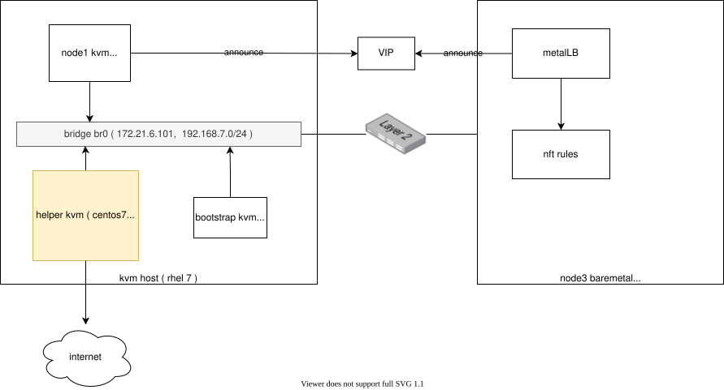

MetalLB layer2 mode on openshift 4.8
openshift对外提供服务，默认是router的方式，里面是一个haproxy，但是默认只是支持http/https，定制一下，可以支持tcp。这种配置方法不是很直观，特别是tcp的支持也很鸡肋。
我们已经知道metalLB可以帮助service之间暴露external IP，并且通过BGP的方式广播出去，但是在PoC的时候，BGP路由器还是比较难搞，好在metalLB还提供了layer2的方式，更简单的对外暴露external IP.
本次实验部署架构图：

安装 MetalLB
安装MetalLB非常简单
https://metallb.universe.tf/installation/clouds/#metallb-on-openshift-ocp
mkdir -p /data/install/metallb
cd /data/install/metallb
wget https://raw.githubusercontent.com/metallb/metallb/v0.10.2/manifests/namespace.yaml
wget https://raw.githubusercontent.com/metallb/metallb/v0.10.2/manifests/metallb.yaml
sed -i '/runAsUser: 65534/d' ./metallb.yaml
oc create -f /data/install/metallb/namespace.yaml
oc adm policy add-scc-to-user privileged -n metallb-system -z speaker
oc create -f /data/install/metallb/metallb.yaml
# to restore
oc delete -f /data/install/metallb/metallb.yaml配置 MetalLB
# on helper
cat << EOF > /data/install/metal-bgp.yaml
apiVersion: v1
kind: ConfigMap
metadata:
namespace: metallb-system
name: config
data:
config: |
address-pools:
- name: my-ip-space
protocol: layer2
addresses:
- 192.168.7.150-192.168.7.200
EOF
oc create -f /data/install/metal-bgp.yaml
# to restore
oc delete -f /data/install/metal-bgp.yaml创建测试应用
# back to helper vm
cat << EOF > /data/install/demo.yaml
---
apiVersion: v1
kind: Pod
metadata:
name: test-0
labels:
env: test
spec:
restartPolicy: OnFailure
nodeSelector:
kubernetes.io/hostname: 'master-0'
containers:
- name: php
image: "quay.io/wangzheng422/php:demo.02"
---
apiVersion: v1
kind: Pod
metadata:
name: test-1
labels:
env: test
spec:
restartPolicy: OnFailure
nodeSelector:
kubernetes.io/hostname: 'worker-0'
containers:
- name: php
image: "quay.io/wangzheng422/php:demo.02"
---
kind: Service
apiVersion: v1
metadata:
name: demo
spec:
type: LoadBalancer
ports:
- name: "http"
protocol: TCP
port: 80
targetPort: 80
selector:
env: test
EOF
oc create -f /data/install/demo.yaml
# to restore
oc delete -f /data/install/demo.yaml
oc get all
# NAME READY STATUS RESTARTS AGE
# pod/mypod-787d79b456-4f4xr 1/1 Running 4 4d17h
# pod/test-0 0/1 ContainerCreating 0 4s
# pod/test-1 1/1 Running 0 4s
# NAME TYPE CLUSTER-IP EXTERNAL-IP PORT(S) AGE
# service/demo LoadBalancer 172.30.178.14 192.168.7.150 80:30781/TCP 4s
# service/kubernetes ClusterIP 172.30.0.1 <none> 443/TCP 5d16h
# service/openshift ExternalName <none> kubernetes.default.svc.cluster.local <none> 5d16h
# NAME READY UP-TO-DATE AVAILABLE AGE
# deployment.apps/mypod 1/1 1 1 4d17h
# NAME DESIRED CURRENT READY AGE
# replicaset.apps/mypod-787d79b456 1 1 1 4d17h
oc get pod -o wide
# NAME READY STATUS RESTARTS AGE IP NODE NOMINATED NODE READINESS GATES
# mypod-787d79b456-4f4xr 1/1 Running 4 4d17h 10.254.1.19 worker-0 <none> <none>
# test-0 1/1 Running 0 9m36s 10.254.0.74 master-0 <none> <none>
# test-1 1/1 Running 0 9m36s 10.254.1.65 worker-0 <none> <none>
oc get svc/demo -o yaml
# apiVersion: v1
# kind: Service
# metadata:
# creationTimestamp: "2021-08-31T06:39:39Z"
# name: demo
# namespace: default
# resourceVersion: "2277414"
# uid: 6f36e7a4-ee2e-4f86-802e-6053debecfb2
# spec:
# clusterIP: 172.30.178.14
# clusterIPs:
# - 172.30.178.14
# externalTrafficPolicy: Cluster
# ipFamilies:
# - IPv4
# ipFamilyPolicy: SingleStack
# ports:
# - name: http
# nodePort: 30781
# port: 80
# protocol: TCP
# targetPort: 80
# selector:
# env: test
# sessionAffinity: None
# type: LoadBalancer
# status:
# loadBalancer:
# ingress:
# - ip: 192.168.7.150
for i in {1..10}
do
curl 192.168.7.150 && echo
done
# Hello!<br>Welcome to RedHat Developer<br>Enjoy all of the ad-free articles<br>10.254.1.65
# Hello!<br>Welcome to RedHat Developer<br>Enjoy all of the ad-free articles<br>10.254.1.65
# Hello!<br>Welcome to RedHat Developer<br>Enjoy all of the ad-free articles<br>10.254.1.65
# Hello!<br>Welcome to RedHat Developer<br>Enjoy all of the ad-free articles<br>10.254.1.65
# Hello!<br>Welcome to RedHat Developer<br>Enjoy all of the ad-free articles<br>10.254.0.74
# Hello!<br>Welcome to RedHat Developer<br>Enjoy all of the ad-free articles<br>10.254.1.65
# Hello!<br>Welcome to RedHat Developer<br>Enjoy all of the ad-free articles<br>10.254.0.74
# Hello!<br>Welcome to RedHat Developer<br>Enjoy all of the ad-free articles<br>10.254.1.65
# Hello!<br>Welcome to RedHat Developer<br>Enjoy all of the ad-free articles<br>10.254.0.74
# Hello!<br>Welcome to RedHat Developer<br>Enjoy all of the ad-free articles<br>10.254.1.65
arp -a
# ? (10.88.0.3) at 9a:b9:62:83:0f:75 [ether] on cni-podman0
# master-2.ocp4.redhat.ren (192.168.7.15) at <incomplete> on enp1s0
# ? (10.88.0.2) at 4e:de:d9:d5:f8:f1 [ether] on cni-podman0
# master-1.ocp4.redhat.ren (192.168.7.14) at <incomplete> on enp1s0
# ? (192.168.7.150) at 52:54:00:d2:ba:43 [ether] on enp1s0
# worker-1.ocp4.redhat.ren (192.168.7.17) at <incomplete> on enp1s0
# _gateway (172.21.6.254) at 00:17:94:73:12:c2 [ether] on enp1s0
# master-0.ocp4.redhat.ren (192.168.7.13) at 52:54:00:d2:ba:43 [ether] on enp1s0
# worker-0.ocp4.redhat.ren (192.168.7.16) at 90:b1:1c:44:d6:0f [ether] on enp1s0
# bootstrap.ocp4.redhat.ren (192.168.7.12) at <incomplete> on enp1s0到worker-0上，看看 nft 规则
# go to worker-0 to analyze the nat rules
nft list ruleset | grep 192.168.7.150
# meta l4proto tcp ip daddr 192.168.7.150 tcp dport 80 counter packets 0 bytes 0 jump KUBE-FW-CTBMGJDNUDRWEDVR
nft list ruleset | grep KUBE-FW-CTBMGJDNUDRWEDVR -A 5
# meta l4proto tcp ip daddr 192.168.7.150 tcp dport 80 counter packets 0 bytes 0 jump KUBE-FW-CTBMGJDNUDRWEDVR
# meta l4proto tcp @nh,96,16 != 2814 ip daddr 172.30.35.8 tcp dport 80 counter packets 0 bytes 0 jump KUBE-MARK-MASQ
# meta l4proto tcp ip daddr 172.30.35.8 tcp dport 80 counter packets 0 bytes 0 jump KUBE-SVC-T3U64PSX3UGU57NF
# meta l4proto tcp @nh,96,16 != 2814 ip daddr 172.30.152.93 tcp dport 80 counter packets 0 bytes 0 jump KUBE-MARK-MASQ
# meta l4proto tcp ip daddr 172.30.152.93 tcp dport 80 counter packets 0 bytes 0 jump KUBE-SVC-ZOXDBRX7A3I2MI4S
# meta l4proto tcp @nh,96,16 != 2814 ip daddr 172.30.99.142 tcp dport 8443 counter packets 0 bytes 0 jump KUBE-MARK-MASQ
# --
# chain KUBE-FW-CTBMGJDNUDRWEDVR {
# counter packets 0 bytes 0 jump KUBE-MARK-MASQ
# counter packets 0 bytes 0 jump KUBE-SVC-CTBMGJDNUDRWEDVR
# counter packets 0 bytes 0 jump KUBE-MARK-DROP
# }
nft list ruleset | grep KUBE-SVC-CTBMGJDNUDRWEDVR -A 3
# meta l4proto tcp ip daddr 172.30.178.14 tcp dport 80 counter packets 0 bytes 0 jump KUBE-SVC-CTBMGJDNUDRWEDVR
# meta l4proto tcp ip daddr 192.168.7.150 tcp dport 80 counter packets 0 bytes 0 jump KUBE-FW-CTBMGJDNUDRWEDVR
# meta l4proto tcp @nh,96,16 != 2814 ip daddr 172.30.35.8 tcp dport 80 counter packets 0 bytes 0 jump KUBE-MARK-MASQ
# meta l4proto tcp ip daddr 172.30.35.8 tcp dport 80 counter packets 0 bytes 0 jump KUBE-SVC-T3U64PSX3UGU57NF
# --
# meta l4proto tcp tcp dport 30781 counter packets 0 bytes 0 jump KUBE-SVC-CTBMGJDNUDRWEDVR
# }
# chain KUBE-SVC-HH47JV2DWEPNMQEX {
# --
# chain KUBE-SVC-CTBMGJDNUDRWEDVR {
# counter packets 0 bytes 0 jump KUBE-SEP-CGMBWTJH33MIKSJY
# counter packets 0 bytes 0 jump KUBE-SEP-V5VBCVCJRZSWQ4D6
# }
# --
# counter packets 0 bytes 0 jump KUBE-SVC-CTBMGJDNUDRWEDVR
# counter packets 0 bytes 0 jump KUBE-MARK-DROP
# }
nft list ruleset | grep KUBE-SEP-CGMBWTJH33MIKSJY -A 3
# counter packets 0 bytes 0 jump KUBE-SEP-CGMBWTJH33MIKSJY
# counter packets 0 bytes 0 jump KUBE-SEP-V5VBCVCJRZSWQ4D6
# }
# --
# chain KUBE-SEP-CGMBWTJH33MIKSJY {
# ip saddr 10.254.0.74 counter packets 0 bytes 0 jump KUBE-MARK-MASQ
# meta l4proto tcp counter packets 0 bytes 0 dnat to 10.254.0.74:80
# }
nft list ruleset | grep KUBE-SEP-V5VBCVCJRZSWQ4D6 -A 3
# counter packets 0 bytes 0 jump KUBE-SEP-V5VBCVCJRZSWQ4D6
# }
# chain KUBE-FW-CTBMGJDNUDRWEDVR {
# --
# chain KUBE-SEP-V5VBCVCJRZSWQ4D6 {
# ip saddr 10.254.1.65 counter packets 0 bytes 0 jump KUBE-MARK-MASQ
# meta l4proto tcp counter packets 0 bytes 0 dnat to 10.254.1.65:80
# }
nft --handle --numeric list ruleset | grep random
# counter packets 0 bytes 0 masquerade random-fully # handle 13看看iptables的规则
iptables -L -v -n -t nat | grep 192.168.7.150
# 0 0 KUBE-FW-CTBMGJDNUDRWEDVR tcp -- * * 0.0.0.0/0 192.168.7.150 /* default/demo:http loadbalancer IP */ tcp dpt:80
iptables -L -v -n -t nat | grep KUBE-FW-CTBMGJDNUDRWEDVR -A 5
# 0 0 KUBE-FW-CTBMGJDNUDRWEDVR tcp -- * * 0.0.0.0/0 192.168.7.150 /* default/demo:http loadbalancer IP */ tcp dpt:80
# 0 0 KUBE-MARK-MASQ tcp -- * * !10.254.0.0/16 172.30.210.66 /* openshift-kube-scheduler-operator/metrics:https cluster IP */ tcp dpt:443
# 0 0 KUBE-SVC-HH47JV2DWEPNMQEX tcp -- * * 0.0.0.0/0 172.30.210.66 /* openshift-kube-scheduler-operator/metrics:https cluster IP */ tcp dpt:443
# 0 0 KUBE-MARK-MASQ tcp -- * * !10.254.0.0/16 172.30.55.237 /* openshift-apiserver-operator/metrics:https cluster IP */ tcp dpt:443
# 0 0 KUBE-SVC-CIUYVLZDADCHPTYT tcp -- * * 0.0.0.0/0 172.30.55.237 /* openshift-apiserver-operator/metrics:https cluster IP */ tcp dpt:443
# 0 0 KUBE-MARK-MASQ tcp -- * * !10.254.0.0/16 172.30.134.31 /* openshift-pipelines/tekton-pipelines-controller:probes cluster IP */ tcp dpt:8080
# --
# Chain KUBE-FW-CTBMGJDNUDRWEDVR (1 references)
# pkts bytes target prot opt in out source destination
# 0 0 KUBE-MARK-MASQ all -- * * 0.0.0.0/0 0.0.0.0/0 /* default/demo:http loadbalancer IP */
# 0 0 KUBE-SVC-CTBMGJDNUDRWEDVR all -- * * 0.0.0.0/0 0.0.0.0/0 /* default/demo:http loadbalancer IP */
# 0 0 KUBE-MARK-DROP all -- * * 0.0.0.0/0 0.0.0.0/0 /* default/demo:http loadbalancer IP */
iptables -L -v -n -t nat | grep KUBE-SVC-CTBMGJDNUDRWEDVR -A 4
# 0 0 KUBE-SVC-CTBMGJDNUDRWEDVR tcp -- * * 0.0.0.0/0 172.30.178.14 /* default/demo:http cluster IP */ tcp dpt:80
# 0 0 KUBE-FW-CTBMGJDNUDRWEDVR tcp -- * * 0.0.0.0/0 192.168.7.150 /* default/demo:http loadbalancer IP */ tcp dpt:80
# 0 0 KUBE-MARK-MASQ tcp -- * * !10.254.0.0/16 172.30.210.66 /* openshift-kube-scheduler-operator/metrics:https cluster IP */ tcp dpt:443
# 0 0 KUBE-SVC-HH47JV2DWEPNMQEX tcp -- * * 0.0.0.0/0 172.30.210.66 /* openshift-kube-scheduler-operator/metrics:https cluster IP */ tcp dpt:443
# 0 0 KUBE-MARK-MASQ tcp -- * * !10.254.0.0/16 172.30.55.237 /* openshift-apiserver-operator/metrics:https cluster IP */ tcp dpt:443
# --
# 0 0 KUBE-SVC-CTBMGJDNUDRWEDVR tcp -- * * 0.0.0.0/0 0.0.0.0/0 /* default/demo:http */ tcp dpt:30781
# Chain KUBE-SVC-HH47JV2DWEPNMQEX (1 references)
# pkts bytes target prot opt in out source destination
# 0 0 KUBE-SEP-XIWZUKNCQE6LJCFA all -- * * 0.0.0.0/0 0.0.0.0/0 /* openshift-kube-scheduler-operator/metrics:https */
# --
# Chain KUBE-SVC-CTBMGJDNUDRWEDVR (3 references)
# pkts bytes target prot opt in out source destination
# 0 0 KUBE-SEP-CGMBWTJH33MIKSJY all -- * * 0.0.0.0/0 0.0.0.0/0 /* default/demo:http */ statistic mode random probability 0.50000000000
# 0 0 KUBE-SEP-V5VBCVCJRZSWQ4D6 all -- * * 0.0.0.0/0 0.0.0.0/0 /* default/demo:http */
# --
# 0 0 KUBE-SVC-CTBMGJDNUDRWEDVR all -- * * 0.0.0.0/0 0.0.0.0/0 /* default/demo:http loadbalancer IP */
# 0 0 KUBE-MARK-DROP all -- * * 0.0.0.0/0 0.0.0.0/0 /* default/demo:http loadbalancer IP */
# Chain KUBE-SEP-V5VBCVCJRZSWQ4D6 (1 references)
# pkts bytes target prot opt in out source destination
iptables -L -v -n -t nat | grep KUBE-SEP-CGMBWTJH33MIKSJY -A 3
# 0 0 KUBE-SEP-CGMBWTJH33MIKSJY all -- * * 0.0.0.0/0 0.0.0.0/0 /* default/demo:http */ statistic mode random probability 0.50000000000
# 0 0 KUBE-SEP-V5VBCVCJRZSWQ4D6 all -- * * 0.0.0.0/0 0.0.0.0/0 /* default/demo:http */
# Chain KUBE-FW-CTBMGJDNUDRWEDVR (1 references)
# --
# Chain KUBE-SEP-CGMBWTJH33MIKSJY (1 references)
# pkts bytes target prot opt in out source destination
# 0 0 KUBE-MARK-MASQ all -- * * 10.254.0.74 0.0.0.0/0 /* default/demo:http */
# 0 0 DNAT tcp -- * * 0.0.0.0/0 0.0.0.0/0 /* default/demo:http */ tcp to:10.254.0.74:80
iptables -L -v -n -t nat | grep KUBE-SEP-V5VBCVCJRZSWQ4D6 -A 3
# 0 0 KUBE-SEP-V5VBCVCJRZSWQ4D6 all -- * * 0.0.0.0/0 0.0.0.0/0 /* default/demo:http */
# Chain KUBE-FW-CTBMGJDNUDRWEDVR (1 references)
# pkts bytes target prot opt in out source destination
# --
# Chain KUBE-SEP-V5VBCVCJRZSWQ4D6 (1 references)
# pkts bytes target prot opt in out source destination
# 0 0 KUBE-MARK-MASQ all -- * * 10.254.1.65 0.0.0.0/0 /* default/demo:http */
# 0 0 DNAT tcp -- * * 0.0.0.0/0 0.0.0.0/0 /* default/demo:http */ tcp to:10.254.1.65:80